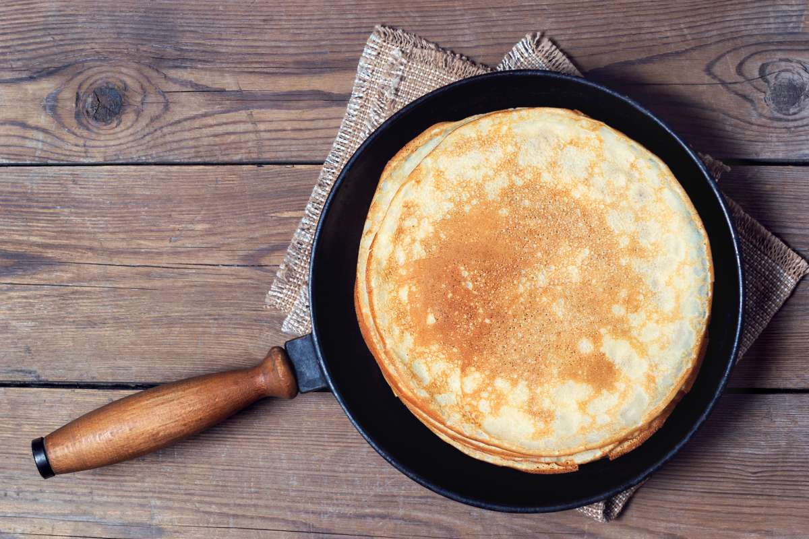

Crepioca
Crepioca ou Ovo com farinha de beijú

A receita é bem simples, possui bons macros além de ser super saboraso. A tapioca c/ ovo cria uma espécie de massa, parece muito com uma torta. Normalmente uso sal nesse receita, mas podemos substituir por alguma coisa doce, como por exemplo, whey.
Ingredientes
- 5~6 ovos inteiros ou 300g de ovo
- 50 gramas de farinha de tapioca hidrata
- Sal à gosto
Modo de preparo
- Pegue os ovos e misture com a farinha de mandioca
- Leve ao fogo baixo por 20 minutos
- Rango pronto. Agora é hora de aproveitar!!!
Peito de Frango
Essa aqui é a minha receita pessoal para peito de frango sem osso cozido. Faço ela há mais ou menos 4 anos
Ingredientes
- 2kg de peito de frango sem osso
- 1 Cebola grande
- 1 Tomate
- 1 Pimentão
- Pimenta do reino
- Pimenta calabresa
- Cuminho
- Sal à gosto
- Dente de alho
- E por último, mas não menos importante, água.
Modo de preparo
- Corte o frango e o demais legumes
- Refogue a cebola e o alho
- Adicione o frango
- Adicione os demais têmperos
- Espere a água do frango subir
- Em seguida adicione 250ml de água
- Agora é só aguardar de 40~50 minutos